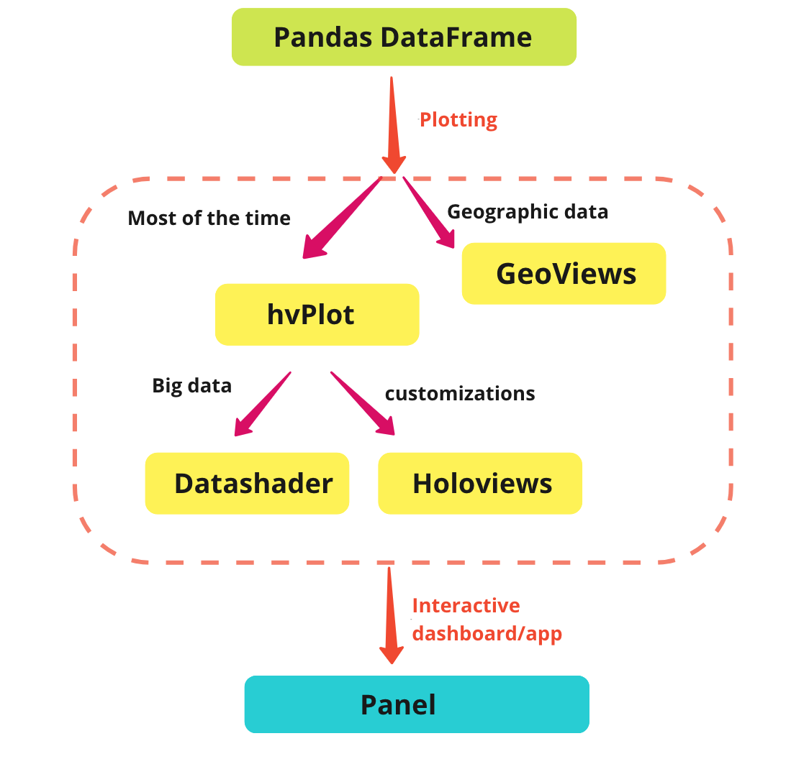
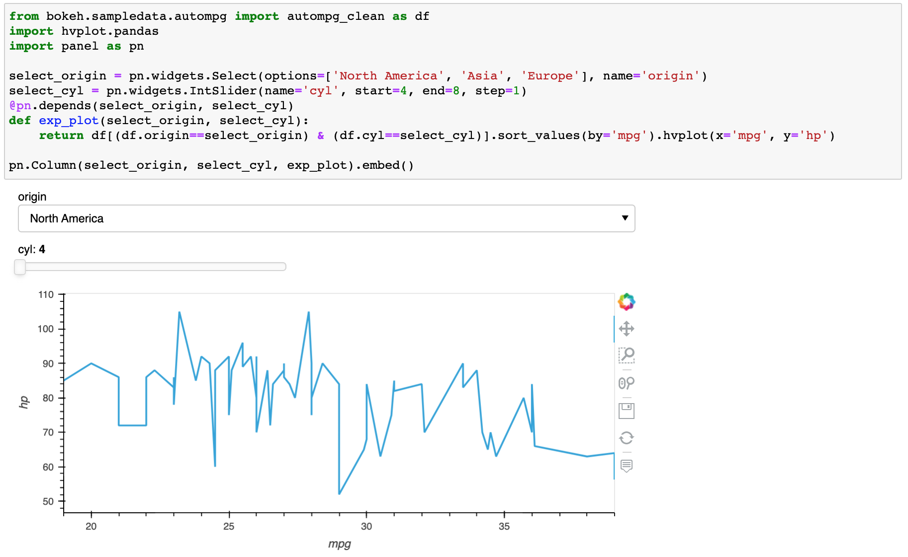
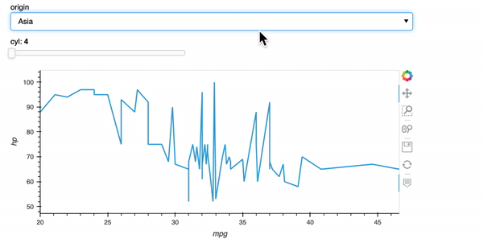

Visualization and Interactive Dashboard in Python¶
My favorite Python Viz tools - HoloViz
It is surprising to me that many data scientists do not know HoloViz. HoloViz is my favorite Python viz ecosystem, which comprises seven Python libraries – Panel, hvPlot, HoloViews, GeoViews, Datashader, Param, and Colorcet.
Why do I love Holoviz?¶
HoloViz allows users to build Python visualization and interactive dashboard with super easy and flexible Python code. It provides the flexibility to choose among several API backends, including bokeh, matplotlib, and plotly, so you can choose different backends based on your preferences.
Unlike the other python viz and dashboarding options, HoloViz is very serious about supporting every reasonable context in which you might want to use a Python viz or app tool:
a Jupyter notebook,
a Python file,
a batch job generating PDFs or SVGs or PNGs or GIFs,
as part of an automated report,
as a standalone server,
as a standalone .html file on a website.
Each of the alternative technologies supports a few of those cases well but lets all the rest slide. HoloViz minimizes the friction and cost of switching between all of these contexts, because that’s the reality of any scientist or analyst – as soon as you publish it, people want changes! Once you have your Dash app; that’s all you have, but once you have a Panel app, you can go back to Jupyter the next day and start right where you left off.
What are the seven packages?¶
Panel builds interactive dashboards and apps. It’s like R Shiny, but more powerful. I can’t say enough how much I love Panel.
hvPlot is easier than any other plotting libraries in my experience, especially if you like to plot Pandas DataFrames. With one line of code, hvPlot will provide you an interactive plot with all the nice built-in functionalities you want.
HoloViews is a great tool for data exploration and data mining through visualization.
GeoViews plots geographic data.
Datashader handles big data visualization. Using Numba (Python compiler) and Dask (distributed computing), Datashader creates meaningful visualizations of large datasets very quickly. I absolutely love Datashader and love the beautiful plots it generates.
Param creates declarative user-configurable objects.
Colorcet creates colormaps.
What is my HoloViz workflow?¶
I usually start with a Pandas dataframe or a Dask dataframe. For geographic data, I use GeoViews. Most of the time, I only use hvPlot. Then, if I need to plot big data (millions/billions of data points), I use Datashader; if I need different customizations, I use Holoviews. I can then build my dashboard/app in Panel.

A very simple example¶
As you can see below, with a few lines of code, you can get an interactive dashboard with a dropdown menu and a slider for your plot.


For deployment, I either output the dashboard directly as an embedded HTML file
jupyter nbconvert YOUR_NOTEBOOK.ipynb --to html --no-input --no-prompt --stdout > output.html
Or I run panel serve YOUR_NOTEBOOK.ipynb or panel serve YOUR_PYTHON_FILE.py to deploy the app somewhere on a server.
What are the things I wish HoloViz could do better?¶
The only thing I wish HoloViz could do better is the graphical designs. To be honest, the out-of-box design is not as pretty as Plotly and R shiny. However, there are some templates and themes that help with the design and you can always create your own theme.
Where can I find support?¶
HoloViz team very actively responds to issues and feature requests on their Github page (https://github.com/holoviz). I have submitted many issues and feature requests on their Github. They also provide consulting services (e.g., https://assets-cdn.anaconda.com/assets/resources/datasheets/dashboards-kickstart.pdf). Most of the HoloViz work actually is funded by a few key companies and agencies that they have established long-standing partnerships with.
Recommended learning resources¶
Pyviz.org has a good summary of all the Python visualization tools and landscape.
If you are interested in learning more about HoloViz, here are some of the tutorials and talks I like:
https://holoviz.org/tutorial/index.html
https://www.youtube.com/watch?v=v0QiTptWt3w
https://www.youtube.com/watch?v=t5oFw9NUhlQ
Hope you enjoy using HoloViz!